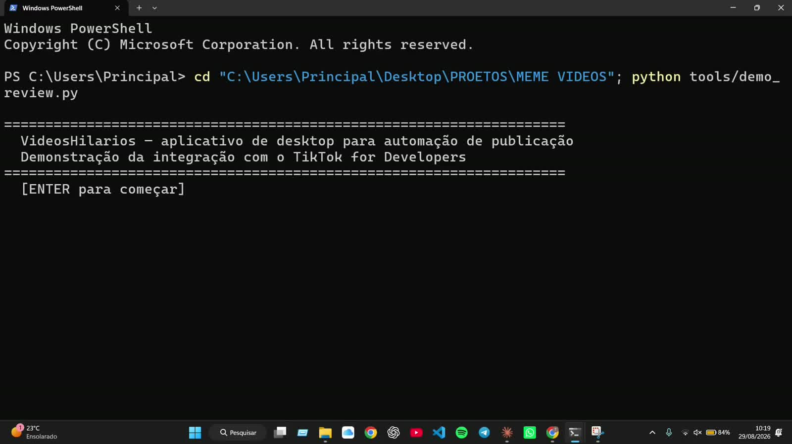
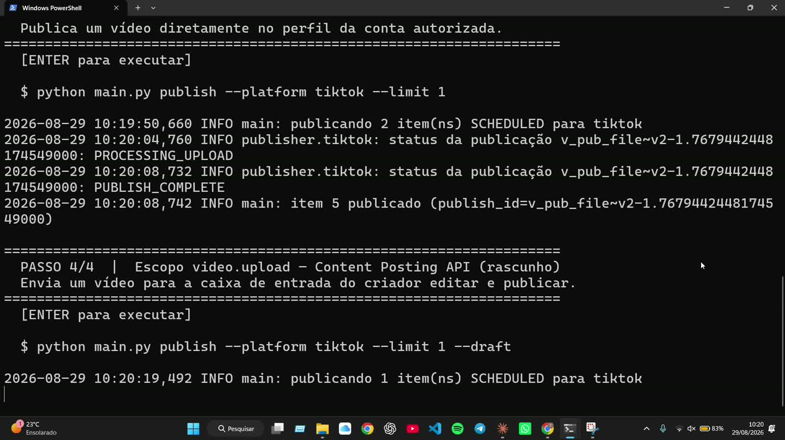

Ferramenta de linha de comando (CLI), em Python, que baixa, converte para 9:16 e publica vídeos no perfil do próprio operador — usando a API oficial do TikTok, com autorização OAuth explícita da conta.
Não existe interface web — o produto é o terminal. As duas capturas
abaixo são da execução real do fluxo de demonstração enviado na
auditoria: início do roteiro guiado e uma publicação chegando a
PUBLISH_COMPLETE via Content Posting API.


Cinco comandos cobrem o ciclo inteiro, do conteúdo bruto até o post publicado.
Cada vídeo é identificado por hash de arquivo e id de origem — rodar o mesmo fetch duas vezes nunca baixa duplicado.
Letterbox automático, normalização de áudio e geração de thumbnail para cada item processado.
Autorização via navegador local (localhost:8000/callback); o token renova sozinho quando expira.
Publica direto no perfil autorizado e acompanha o status até a confirmação da API.
Alternativa que envia para a caixa de entrada do criador, que finaliza a publicação no próprio app.
Cada item percorre estados (baixado → pronto → agendado → publicado) rastreáveis em banco local.